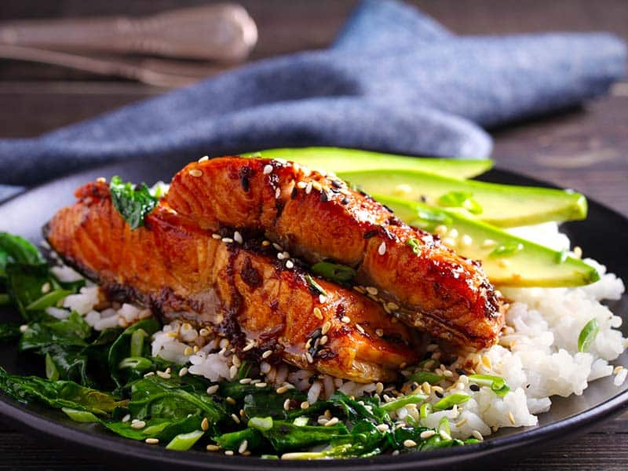

Salmon and Rice

Description
This is a Macro-Friendly plate of Salmon and Rice with Vegetables! This variant will include Peas and Sweetcorn but you can use any Vegetables you like! Low in fat and high in Protein this makes the perfect recipe for anyone looking to reduce calories and hit the gym! Also because the Salmon is fatty enough, we actually don't need to add any extra Oil or Butter if we don't want to!
Ingredients
- 240g Raw Salmon
- 50g uncooked Basmati Rice
- Salt & Pepper
- 80g Frozen Peas & Sweetcorn
Method
- Pre-heat the oven to 180C.
- Wash the rice and let soak for 15-30 minutes.
- Add 75g Water to a pan. Bring to a boil; then add rice, simmer and let cook for 12-15 minutes.
- Add Water and Salt to a pan. Bring to a boil, then add the vegetables and simmer for 3-5 minutes.
- Season the Salmon and add to a tray with Parchment Paper.
- Bake in the oven for 12-15 minutes until internal temp. reaches 135F. (You can use a meat thermometer.)